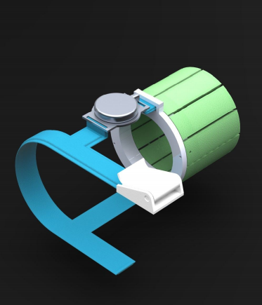

Other Ventures
I have a lot of varied interests that do not necessarily fit on the other pages. This includes music, performing arts, 3D and CAD design, and more!
Accidentally deriving somewhat the moving-average algorithm + flight computer fiasco
June 2022
Languages/toolkits used: Multigrain Cheerios and a Ramada notepad (and C++?)
At the Spaceport America Cup in 2022 (Check "Space" for a better overview), we ran into more than a few problems - quite a few, actually. One of them was that we had not realized that the flight computer that we had created ourselves (the SRAD one, or "Student-Researched and Designed"), was not fully programmed. The goal of the flight computer is to manage our dual-deployment recovery system which consisted of a drogue chute deploying at apogee (the max. altitude of the flight) and a larger main chute deploying at 1500ft. The flight computer can detect this in a multitude of ways primarily by using a barometer/thermometer combo for altitude reading and a gyroscope for acceleration reading.
However, this sensor data is noisy - if you want to detect apogee, for example, you dont want to count an accidental spike in the reading as the maximum apogee, risking deploying the drogue chute on the way up. How do you correct for this error? The person who had written the code used a Madgwick filter but for one I wasn't sure that it would perfectly smooth everything (I couldn't get a guaranteed yes on that one) and for two we for some reason decided to use Arduino Nanos which have almost no storage, and the library for the filter was very large. I had to think of a way to preserve past data trends while being able to overlook significant outliers and not weight them greatly.
Enter Cheerios. I set up a model of a slightly noisy sensor reading by modeling with piles of Cheerios that generally increased then decreased in amounts. My first step was to keep the past x sensor readings in a list, and then check in between each of those sensor readings if Cheerio pile x+1 had a greater or less amount of Cheerios than pile x. However, this still weights outliers too greatly - what if you have a BUNCH of large Cheerio piles? You are basically relying way too much on the arbitrary size of the array that you are creating to make sure that the average increase/decrease detection is not swayed by bad data.
So why not use the average of the system at a given time? In this setup, you have two arrays. The first array is the one we talked about which just has the past x sensor readings. The other array is now full of x/2 averages of the first array at every given state. Say, for example, that you have an array [0,0,0,0,0,1] of sensor readings and then the other array would be [0,0,1/6] of current averages. This method bakes in previous knowledge already by having the moving average, and you can even go one degree higher by doing what we were attempting to do before and look at increasing/decreasing patterns - this time with the array of state averages. This successfully overlooks large data spikes or non-continuing trends and though you sacrifice several timesteps as the system state fully clears up for you to deploy the drogue, it is more important to be conservative in this case and deploy it late than deploy on the way up.
So, turns out this is called the moving-average algorithm, and it is a common signals-processing technique. Only learned that afterwards but, heyo! Maybe if I were a mathematician in the 1800's I could have made a name for myself and it would be called the Kuleshov algorithm or something corny like that.
Norway!
May 2022
My trip to Norway with William, summed up in the most accurate way possible.
I made a Linguistics minor in the Columbia School of Engineering!
Fall 2019 - Spring 2022
Man, this was a long time coming and it took way too long.
Ever since I took a Linguistics class at CTY I have always wanted to study Linguistics in some capacity - however, when I got into the Columbia engineering school, I realized that I would not get any credit for taking the Linguistics classes that I was going to take regardless. I was told very quickly after coming to Columbia that minors can be made and look! They weren't even made that long ago! So you can make one too, Jess! I was really, really naive to think that was the case.
I started honestly working towards a minor in December 2019 after the major had been passed in the College, which then people in the administration procrastinated on responding to me about until Covid hit and the Engineering Student Council president told me that they no longer would be working. It was then on hiatus until junior year, where I worked with the next ESC president on getting it presented to ESC, which was successful. The next step was presenting the plan of classes to the SEAS Committee on Instruction, or COI, comprised of professors and other staff who would be really my final barrier to making this a reality. I did not get the chance to do this until December of 2021, and I had to get the curriculum vetted multiple times before it finally passed through there. In the interim, somehow the Computer Science department was placed in charge of passing the minor and I (and everybody, it seems) lost track of who was actually responsible for doing the work to get this passed.
After many emails, pinging, CC'ing and general back-and-forth it passed! I managed to get it just in time for graduation and get it into the aging backend of Columbia's transcript system to get people at least some recognition for taking the courses they had been taking all along. This was a logistical hell and I am so glad to be out of it.
Learning what a "static website" means
January 2022
Languages/toolkits used: HTML, JQuery, probably something else
Ah, how the mighty have fallen! In an attempt to personalize my website, I have had some ups, some downs, and now a complete full-stop to a project I had been hoping to implement.
I have recently been using this wonderful scrobbler called LastFM(found at last.fm) to track my music taste. For those unfamiliar, a scrobbler is a program that scrapes your specified music-streaming services and tracks the songs. LastFM also gives you data on the genre, how your listening has changed over time, and other truly excellent statistics.
For the purposes of my website's homepage, I really wanted to add a section showing my most recently listened-to song - however, I had no idea how to implement this. A couple of hours later learning about how JQuery handles HTTP requests and much trial and error parsing the XML file that LastFM returns, I got it! I had done it (picture evidence shown above! I know I know, I could have just written "Yeah Right by Joji" and you would never have known the difference, but please believe me). So, success, right? WRONG!
This is where GitHub Pages comes in. All is fine and well, it works locally, and I commit the code - and it doesn't work in production. A quick Google Search tells me that GitHub Pages cannot handle GET and PUT requests. A TRAGEDY!
Was it all for naught? Potentially. Even if I did not get to actually implement it, what a fun project it was! It really makes me think about what kind of websites I actually can create for myself, should I want to ever pay for a non-static website. I most likely would want a website with a more aesthetically-pleasing implementation of my LastFM data - maybe even an embedded website displaying some interesting visualization from another website; maybe I will add some kind of nice visuals of my own, perhaps a photo gallery? Who knows what the future holds!
Retractable Poi
Spring 2020
During Spring of 2020, I took a Computer Graphics and Design course, which was retrospectively one of the greatest decisions I have ever made. I have worked with CAD a lot over the years for various projects, but I have never had any formal training. Taught by Dr. Yesilevskiy, I learned valuable skills for modeling all sorts of objects and I got hands-on experience that still helps me to this day.
The best part of this class was the final project, where we were simply told to "find a problem in the world and fix it" with some kind of product. I decided to focus on the flow arts, a subset of performing arts that uses props that are swung, thrown, or spun. I more specifically focused on poi, which are at a very basic level balls on strings that can be spun or thrown.
Because typical poi spinners perform in often weird locations, it is a common problem that they get lost or stolen, and because they are usually very expensive (a pair of programmable LED poi can cost upwards of $220 USD), it can cause financial burden on the spinner. I decided to remedy this problem by making retractable poi that can be worn on the arm, then extended during spinning, and then retracted later. It was a challenge to model, especially modeling fabric, but it ended up being a product I was very proud of!
For a clearer description of its purpose, design, and
function, check out my proposal here.
For some of the CAD files,
check out my GrabCAD here. Below is the (admittedly very not-serious)
pitch video that we were also tasked with creating!